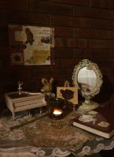

Pendahuluan

Halo, selamat datang di halaman Nindya:) Disini, kalian bisa eksplor konsep kamarku dimana aku mendekorasi berbagai sudut kamarku sesuai estetika yang aku inginkan.
Konsep kamarku adalah vintage, dan sedikit whimsy. Kamarku adalah tempat dimana aku beristirahat, bermain, belajar, dan banyak aktivitas lainnya. Banyak temanku mengatakan bahwa konsep kamarku menggambarkan diriku.
Aku cinta kamarku. Kamarku adalah tempat yang bisa membuatku nyaman dan tempat dimana aku bisa menjadi diriku yang sebenarnya. Terkadang aku ingin terus mendekorasi kamarku menjadi lebih estetik dan sesuai dengan papan inspirasi pinterest saya.
Selamat datang di konsep kamarku ^^
Mejaku
Mejaku adalah tempat dimana aku belajar, membuat kerajinan, makan, dan berbagai aktivitas lainnya.
Aku juga mendekorasi dinding bagian mejaku dengan stiker dan juga kertas foto dengan teman-temanku. Ada juga dekorasi mainan yang terdapat di rak atas meja, dinding, dan juga dekorasi yang bergelantungan dari rak atas
Poster
Dengan adanya poster poster yang aku tempel di dinding, kamarku menjadi lebih estetik dan juga tidak minimalis sesuai yang aku inginkan.
Aku mengambil gambar poster-posterku dari pinterest sesuai dengan estetika dan kesukaanku, lalu aku print untuk ditempel ke dinding kamarku. i love to admire them.
Customer Supports
Bagian favortiku setiap hari adalah saat aku kembali ke kamar dimana aku bisa bersantai dengan nyaman. I think our bedroom is a reflection of our mind.